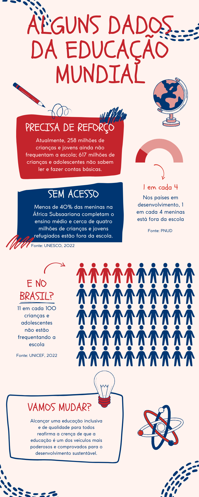

Educação de Qualidade
Objetivo de Desenvolvimento Sustentável 4
O QUE DIZ O ODS 4: EDUCAÇÃO DE QUALIDADE

Metas até 2030


Sobre a autora
Olá, me chamo Aline Guimarães, sou de Recife - PE e sou estudante de Desenvolvimento Web do Projeto ElasNaTech 2023 da JA Brasil, sendo mentorada pela professora Juliana Ribeiro.
Bacharel em Turismo em transição de área, o trabalho em Gestão de Projetos me levou ao caminho do Business Intelligence e da Ciência de Dados, áreas onde cursei pós-graduações. A partir daí a aproximação da área de tecnologia foi (e está sendo) um processo natural e encantador.

Contato
Envie uma mensagem
Créditos
Acesse e saiba mais